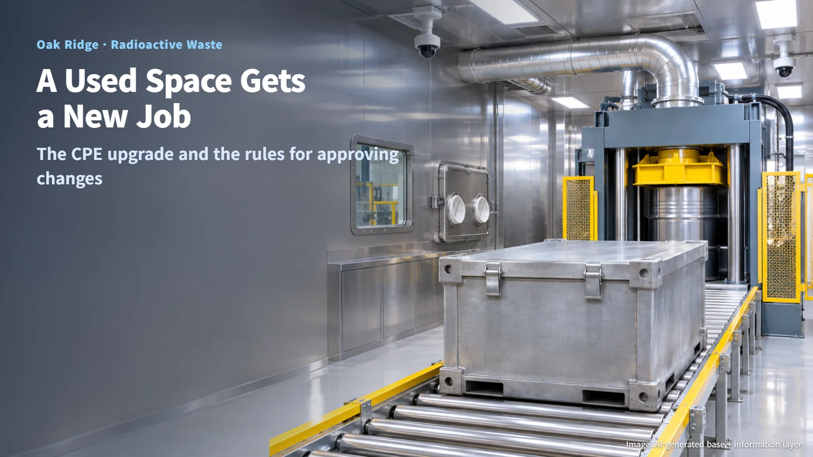
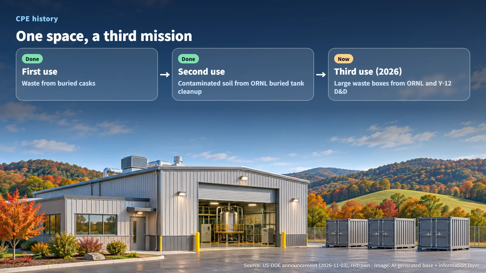
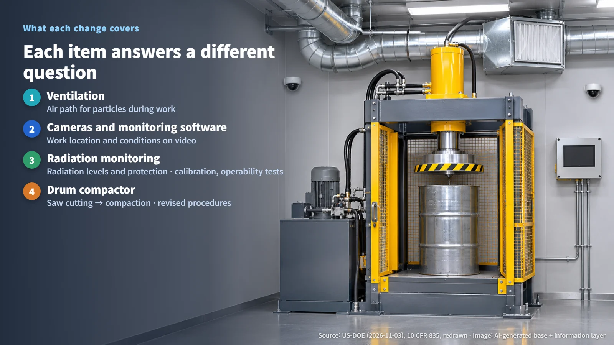
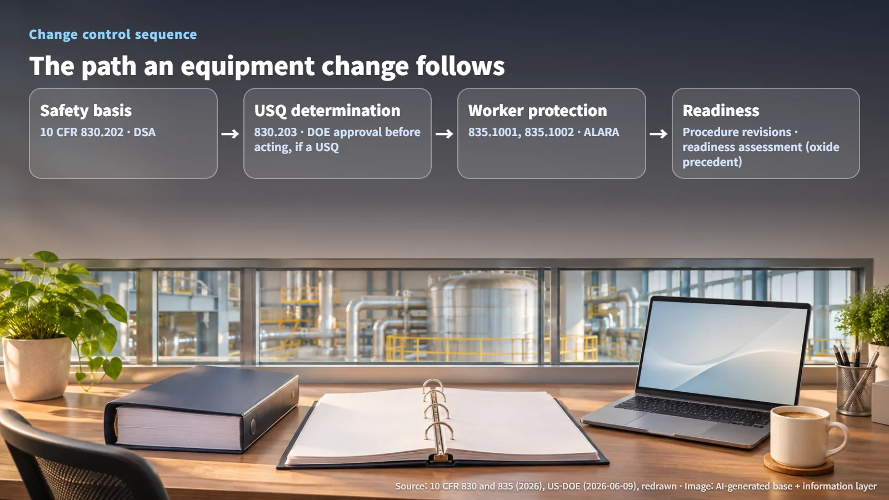

United States · Waste Management
Giving a Used Processing Space a Job With Large Waste Boxes: Oak Ridge's CPE Upgrade and the Rules for Approving Changes
Oak Ridge converted its cask processing enclosure for large decommissioning waste boxes, with new ventilation, cameras and a drum compactor.
When a facility that handles radioactive waste swaps out equipment and sets up a new way of working, a natural question follows: what has to be checked first? On November 3, 2026, the US Department of Energy's Office of Environmental Management (DOE EM) announced upgrades that expand processing capabilities at the Transuranic Waste Processing Center (TWPC) in Oak Ridge, Tennessee. Transuranic waste is waste that contains elements heavier than uranium, such as plutonium. This post uses that project to trace the rules that govern changes to a nuclear facility.

A Space on Its Third Mission: The CPE's History and This Year's Upgrade
The space being upgraded is the cask processing enclosure (CPE). It was originally designed to process waste held in casks (containers) that had been buried underground. It was later used to process contaminated soil from the cleanup of legacy buried tanks at Oak Ridge National Laboratory (ORNL). With that work finished, the same enclosure is now taking on large waste boxes generated by deactivation and demolition at ORNL and the Y-12 National Security Complex. That makes this its third mission.

This year, the Oak Ridge Office of Environmental Management (OREM) and its contractor, United Cleanup Oak Ridge (UCOR), removed outdated equipment and electrical controls, modified the ventilation, and installed cameras, monitoring software and a drum compactor. Picture an enclosure where old control panels have been stripped out and a camera system and a compactor now stand in their place.
Reusing an existing space shifts the central question to this: do the new equipment and the new work fit within the facility's existing safety basis?
Ventilation, Cameras and a Compactor: What Each One Covers
TWPC has four processing areas. There are gloveboxes (sealed metal enclosures fitted with windows and glove ports), a box breakdown area, a hot cell (a heavily shielded space where work is done by remote control), and the CPE. The layout lets operators match the handling method to the physical form of the material and its radiation level, and with this upgrade the CPE becomes the area that handles large waste boxes.
Each of the changed items answers a different question:
- Ventilation: manages which air path any particles generated during work will follow.
- Cameras and monitoring software: show, on video, where work is happening and what conditions look like on the floor.
- Radiation monitoring: measures radiation as a physical quantity to confirm that protective measures are working as intended.
- Drum compactor: changes the work method itself, so the work area and the operating procedures change along with it.
Cameras answer "where is what happening?" while instruments answer "how much radiation is there?", so the two sets of data are managed separately.

Previously, drums were cut open with a reciprocating saw. Cutting is a task that can generate particles as the blade passes through the material, while compaction presses a drum to reduce its volume. Where a saw blade once sliced through drums, a compactor now presses them flat. DOE says it expects the work to be safer and more efficient; figures showing the size of that effect have not been released.
The Path Every Equipment Change Follows: The Safety Basis and the USQ Process
Changes at DOE nuclear facilities operate within two federal regulations:
1. Maintaining the safety basis (10 CFR 830.202): Hazard Category 1, 2 and 3 facilities maintain a safety basis that sets out what work is done, what hazards exist and what controls address them. The analysis that makes up that basis is the Documented Safety Analysis (DSA). 2. Evaluating changes (10 CFR 830.203): The Unreviewed Safety Question (USQ) process determines whether a change to the facility or its procedures falls within the scope of the existing analysis. Any action that involves a USQ must be approved by DOE before it is implemented. 3. Designing for worker protection (10 CFR 835): Section 835.1001 identifies confinement, ventilation, remote handling and shielding as the primary engineered controls, and Section 835.1002 sets design objectives for facility modifications: limiting releases of airborne radioactive material into the workplace and controlling inhalation. Underlying both is the ALARA principle (As Low As is Reasonably Achievable), which aims to keep exposure as low as is reasonably achievable. 4. Readiness for monitoring (10 CFR 835.401): Radiation instruments must be periodically maintained and calibrated, be appropriate for the type of radiation and the conditions in which they are used, and be checked for proper operation.
Read against this framework, the ventilation modification connects directly to the confinement and ventilation measures that Section 835.1002 names as the means of meeting design objectives during modifications. The USQ process is the step in which a change to the facility or its procedures is compared with what the safety analysis documents already cover. The actual USQ determination for the CPE has not been released.

The same facility offers a precedent. When TWPC introduced processing of oxide waste containing fine radioactive particles and powders, DOE explained that it used ventilation and packaging to prevent particles from spreading, along with gloveboxes and a remote hot cell, and that the effort went through facility modifications, procedure revisions and a readiness assessment together.
After Processing: The Link to Off-Site Disposal
Processing at TWPC prepares waste for final off-site disposal. For the oxide waste at the same facility, the Waste Isolation Pilot Plant (WIPP) is identified as the subsequent disposal destination. The disposal path for the large boxes processed in the CPE will be set by the characteristics of the material inside each box and by the acceptance documentation.
The annual increase in processing capacity, the reduction in worker exposure, disposal completion records and the acceptance specifications for the new boxes have not yet been released. The next things to look for in follow-up announcements are actual processing results and worker exposure data from the upgraded area, along with the waste acceptance criteria and the links to off-site transport and disposal.
Reusing a space goes hand in hand with realigning its safety basis. The next time a "facility upgrade" headline appears, it is worth asking which safety documents and which procedures that change went through.